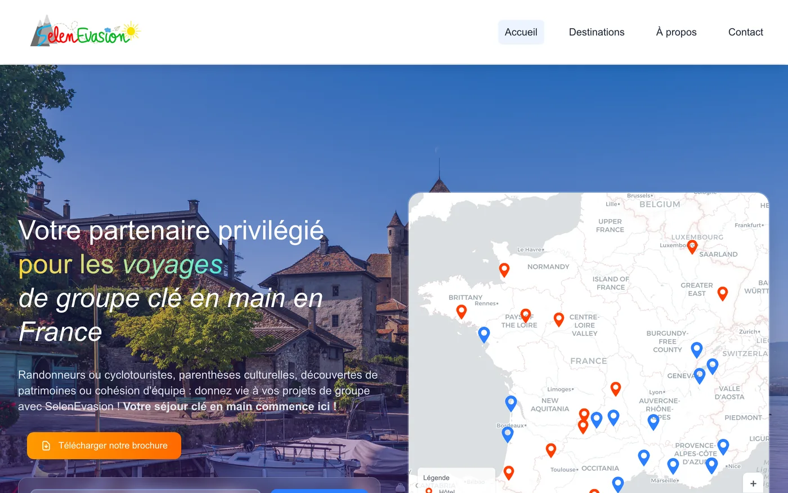

SelenEvasion, un site
qui déclenche des devis
Des séjours de groupe clé en main partout en France. L'enjeu du site n'était pas d'être joli : c'était qu'un responsable de groupe comprenne l'offre et demande un devis sans avoir à appeler.
Voir SelenEvasion en ligne Parler d'un projet

- Rôle
- Mission client, conception et développement
- Secteur
- Séjours de groupe : randonnée, cyclotourisme, patrimoine, cohésion d'équipe
- Technologies
- Next.js, carte interactive, référencement, Vercel
- Point clé
- Réseau de 26 hôtels et villages vacances à rendre lisible
- En ligne
- selenevasions.fr
Une offre riche,
difficile à saisir
SelenEvasion organise des séjours de groupe clé en main dans toute la France : randonnée, cyclotourisme, découverte du patrimoine, cohésion d'équipe.
Le problème d'une offre pareille n'est pas de manquer d'arguments. C'est d'en avoir trop. Plusieurs thématiques, des dizaines de destinations, un réseau d'hébergements, des formules qui varient selon la taille du groupe et la saison : présenté à plat, cela devient un catalogue qu'on ne lit pas.
Le visiteur, lui, arrive avec une question très étroite. Il organise un séjour pour une association, un comité d'entreprise, un club ou un groupe scolaire, il a une région en tête ou une activité en tête, et il veut savoir en deux minutes si cette offre correspond. S'il ne le sait pas, il ne téléphone pas : il ferme l'onglet.
Entrer par la carte,
pas par le menu
La question spontanée d'un responsable de groupe est géographique : « qu'est-ce qui existe autour de là où je veux aller ? » Le site part de là.
- Une carte interactive des destinations, sur laquelle on se repère sans lire une liste
- Une recherche par lieu, pour les visiteurs qui savent déjà où ils vont
- La mise en avant du réseau de 26 hôtels et villages vacances, qui transforme un argument abstrait en preuve concrète
- Le téléchargement de la brochure, pour ceux qui doivent faire valider le projet par un comité
- Une demande de devis accessible depuis n'importe quelle page, sans formulaire à rallonge
La brochure mérite un mot. Dans ce métier, la décision se prend rarement seul : le responsable doit présenter l'offre à d'autres personnes, souvent hors ligne. Un document à emporter n'est pas un gadget, c'est l'outil qui permet au dossier d'avancer entre deux visites sur le site.
Être trouvé sur
une intention précise
Les recherches de ce secteur sont longues et localisées, du type « séjour randonnée groupe Vercors » ou « village vacances groupe Auvergne ».
Ce genre de requête ne se gagne pas avec une page d'accueil généraliste. Il faut des pages qui existent réellement pour chaque intention, avec un titre qui reprend les mots employés par le visiteur, un contenu qui répond vraiment et une structure que Google peut parcourir.
Le travail technique va avec : rendu côté serveur pour que le contenu soit lisible sans exécuter de script, données structurées, plan de site, images compressées et servies à la bonne taille, affichage rapide sur un téléphone en 4G. Une carte interactive est exactement le genre de composant qui plombe une page si on la charge sans précaution.
C'est la même méthode que celle décrite sur la page création de site internet, appliquée à un secteur où la concurrence se joue sur des dizaines de requêtes locales plutôt que sur une seule.
Un site se juge
sur les demandes
Un site vitrine n'a qu'un seul indicateur qui compte : le nombre de demandes qualifiées qu'il produit. Le reste, le nombre de visites, le temps passé, la beauté de la page d'accueil, ne sert qu'à expliquer ce chiffre.
C'est pour cette raison que je commence toujours par la même question, avant le design : qui doit vous contacter, et qu'est-ce qui l'en empêche aujourd'hui ? Sur SelenEvasion, la réponse tenait dans la géographie et dans la preuve du réseau. Sur votre projet, elle sera ailleurs.
Ce qu'on me
demande ensuite
- Travaillez-vous en dehors de Nantes ?
- Oui. Le cadrage et le suivi se font en visio, et je me déplace en Loire-Atlantique quand une rencontre facilite les choses. SelenEvasion couvre toute la France.
- Combien coûte un site de ce type ?
- Un site vitrine soigné démarre à 450 €. Un site avec carte interactive, recherche et pages de destinations se situe au-dessus : le simulateur donne la fourchette selon le nombre de pages et de fonctionnalités.
- Mon site actuel est daté, faut-il tout refaire ?
- Pas toujours. Parfois la structure tient et seul l'habillage est à reprendre. La page refonte de site internet détaille comment je tranche entre retouche et reconstruction.
- Pouvez-vous reprendre un site fait par quelqu'un d'autre ?
- Oui, à condition d'avoir accès au code et à l'hébergement. Je commence par un état des lieux écrit avant de m'engager sur un devis.
Voir aussi
Un site qui doit
faire venir des demandes
Le simulateur donne une fourchette en trente secondes, sans inscription. Elle part avec votre message si vous décidez de m'écrire, et je réponds sous 24 heures ouvrées.